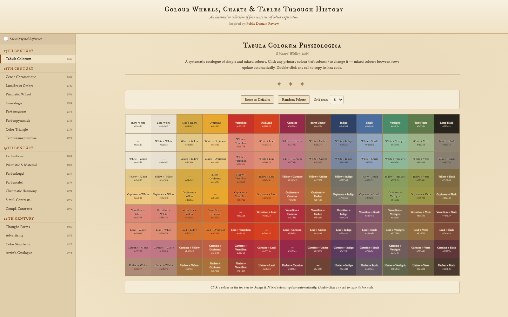
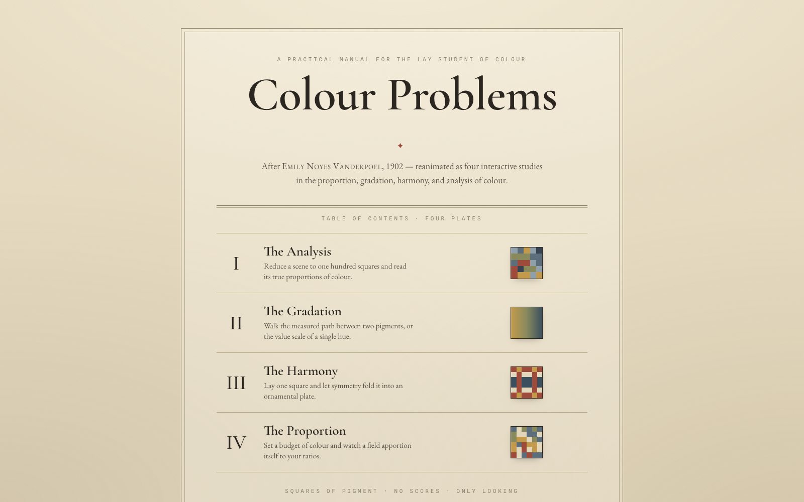
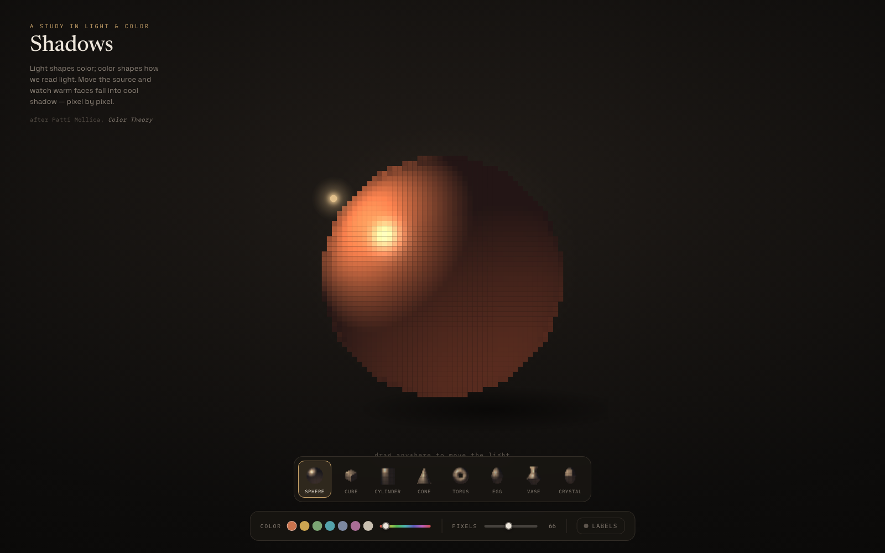
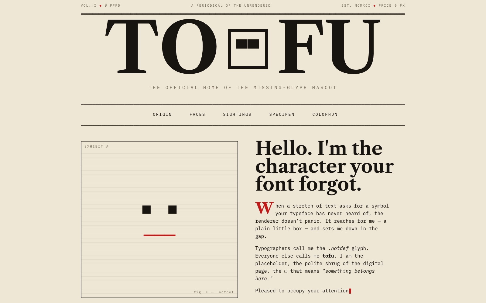

Experiments · 2026
A growing shelf of single-page experiments. Some borrow from history; some chase a single optical or typographic idea. Each one lives in its own page.

Four centuries of colour exploration reanimated as twenty interactive tools — from Waller's 1686 table to early-20th-century catalogues, each set beside the engraving it descends from.

A reinterpretation of Emily Noyes Vanderpoel's 1902 manual, recast as four interactive studies.

An exploration of how shadows take on colour — the quiet companion of every light source.

An editorial tribute to the little box that appears when a font has no glyph. Built almost entirely from Unicode.